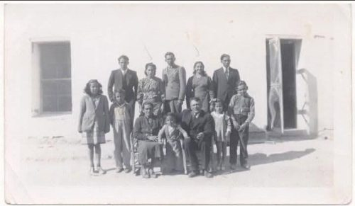

Aurora García Lozano
| Aurora García Lozano | |
|---|---|
 Retrato | |
| Descripción | Línea García |
| Fechas / lugar | 1935–2021 |
| Línea familiar | García Garza |
Aurora García Lozano (1935–2021) — Nacida en Anáhuac, Nuevo León, en 1935 y fallecida allí en 2021. Esposa de Alfredo Garza Falcón; novena de diez hermanos de la familia García Lozano.
Contenido
Aurora García Lozano
Nacida en Anáhuac, Nuevo León, en 1935 y fallecida allí en 2021. Esposa de Alfredo Garza Falcón; novena de diez hermanos de la familia García Lozano.
Datos vitales
- Nacimiento: 25 de junio de 1935, Anáhuac, Nuevo León (dato del árbol, sin acta adjunta).
- Matrimonio: Con Alfredo Garza Falcón; fecha y lugar sin dato.
- Defunción: 29 de enero de 2021, Anáhuac, Nuevo León.
- Sepultura: 30 de enero de 2021, Panteón Municipal de Anáhuac.
Familia
- Padres: Santos García Hinojosa (G9DH-BKJ) y Dorotea Lozano García (LZGS-WXL).
- Cónyuge(s): Alfredo Garza Falcón (L5BK-4XW, 1916–2003).
- Hijos conocidos: Alfredo Garza García (P617-X1F, 1955–2019); Silvia Garza García (PWZ3-RGQ, 1957–1967); Rubén Darío Garza García (GQQP-SMY, 1960–2025); una hija «Sin Nombre» fallecida al nacer en Nuevo Laredo, 3 nov 1965.
- Hermanos: José Santos (1916–2002), María (1917), Porfirio (1919), Daniel Clímaco (1922–2015), Alicia (1928–1997), Félix (1930–1989), Guillermo (1933) y Francisco (1937).
Actas (1)
Defunción de «Sin Nombre» Garza García (Nuevo Laredo, 1965)
Registro civil · defunción · 1965 · México, Tamaulipas, Registro Civil, 1800-2002
Defunción de una hija recién nacida («Sin Nombre» Garza García, edad 0), 3 de noviembre de 1965, Nuevo Laredo, Tamaulipas (pág. 70, reg. 1070). Padre: Alfredo Garza; madre: Aurora García. Registro relacionado en el perfil de Alfredo: 1:1:QGMT-56KF.
Fotografías y documentos familiares
Notas, dudas y discrepancias
- La única acta que la nombra es la defunción de su hija en 1965; no hay acta propia de nacimiento, matrimonio ni defunción.
Investigación Sefarad-MX, octubre de 2026. Donde no hay documento se indica «sin dato».
Fuentes
14 fuentes documentales del archivo respaldan esta biografía (actas, matrimonios, testamentos y pruebas de filiación). Las referencias de arriba son sólo las principales; el listado completo está en Pruebas y documentos del archivo (14).
Referencias
- «Aurora García Lozano», Genealogía Sefardí — investigación Sefarad-MX, genealogiasefardi.site/biografias/aurora-garcia-lozano-1935.